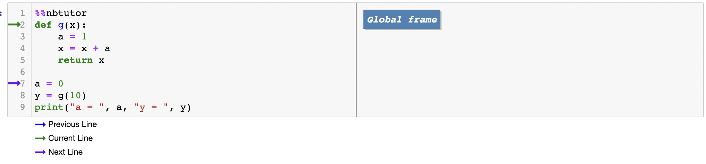
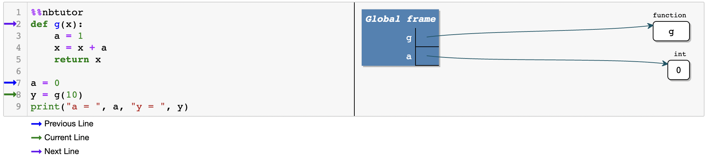
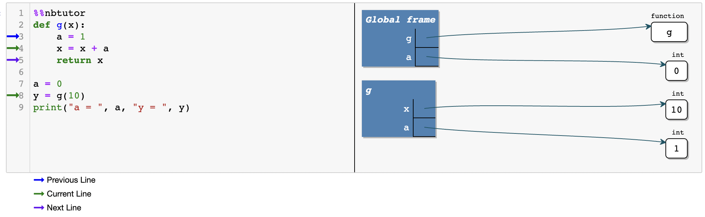
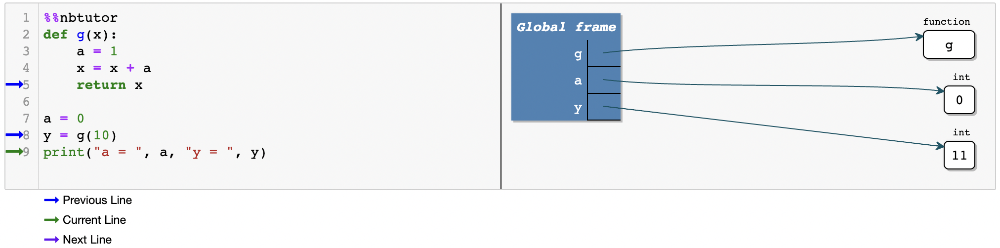
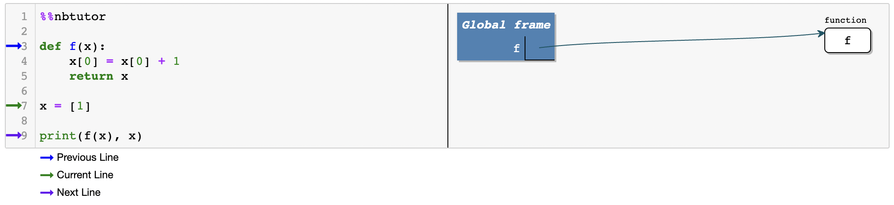
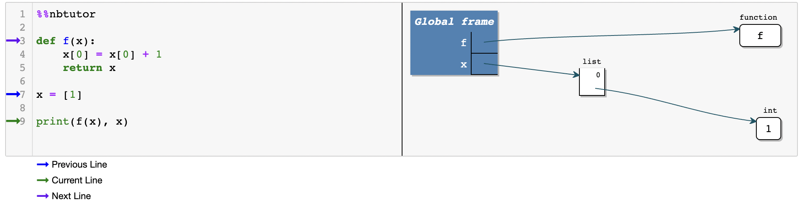
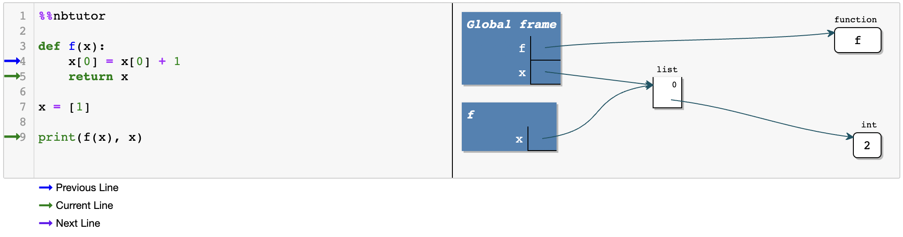
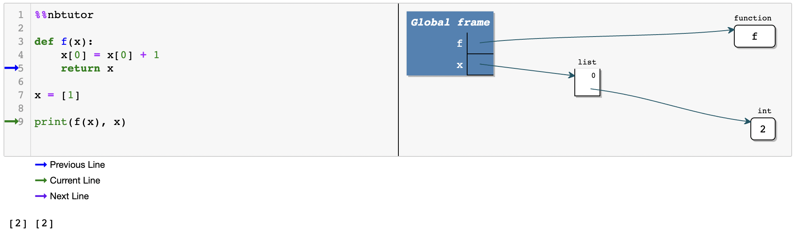

7. نامها و فضاهای نام#
7.1. مرور کلی#
این درس تماماً درباره نامهای متغیر، نحوه استفاده از آنها و نحوه درک آنها توسط مفسر Python است.
ممکن است این موضوع کمی خستهکننده به نظر برسد، اما مدلی که Python برای مدیریت نامها اتخاذ کرده است، ظریف و جالب است.
علاوه بر این، اگر درک خوبی از نحوه کار نامها در Python داشته باشید، ساعتهای زیادی را از اشکالزدایی صرفهجویی خواهید کرد.
7.2. نامهای متغیر در Python#
دستور Python زیر را در نظر بگیرید
x = 42
اکنون میدانیم که وقتی این دستور اجرا میشود، Python یک شیء از نوع int در حافظه کامپیوتر شما ایجاد میکند که شامل موارد زیر است:
مقدار
42برخی صفات مرتبط
اما خود x چیست؟
در Python، x یک نام نامیده میشود، و دستور x = 42 نام x را به شیء عدد صحیح که تازه در موردش صحبت کردیم متصل میکند.
در پشت صحنه، این فرآیند اتصال نامها به اشیاء به عنوان یک دیکشنری پیادهسازی میشود - بیشتر درباره این موضوع در ادامه خواهیم گفت.
هیچ مشکلی برای اتصال دو یا چند نام به یک شیء وجود ندارد، صرفنظر از اینکه آن شیء چه باشد
def f(string): # Create a function called f
print(string) # that prints any string it's passed
g = f
id(g) == id(f)
True
g('test')
test
در مرحله اول، یک شیء تابع ایجاد میشود و نام f به آن متصل میشود.
پس از اتصال نام g به همان شیء، میتوانیم از آن در هر جایی که از f استفاده میکنیم، استفاده کنیم.
وقتی تعداد نامهای متصل به یک شیء به صفر میرسد، چه اتفاقی میافتد؟
در اینجا مثالی از این وضعیت آورده شده است، که در آن نام x ابتدا به یک شیء متصل میشود و سپس به شیء دیگری دوباره متصل میشود
x = 'foo'
id(x)
x = 'bar'
id(x)
139838609662208
در این مورد، پس از اینکه x را مجدداً به 'bar' متصل میکنیم، هیچ نامی به شیء اول 'foo' متصل نیست.
این یک محرک برای جمعآوری زباله 'foo' است.
به عبارت دیگر، جای حافظهای که آن شیء را ذخیره میکند، آزاد میشود و به سیستم عامل بازگردانده میشود.
جمعآوری زباله در واقع یک حوزه تحقیقاتی فعال در علوم کامپیوتر است.
اگر علاقهمند هستید، میتوانید بیشتر درباره جمعآوری زباله بخوانید.
7.3. فضاهای نام#
از بحث قبلی به یاد بیاورید که دستور
x = 42
نام x را به شیء عدد صحیح در سمت راست متصل میکند.
همچنین ذکر کردیم که این فرآیند اتصال x به شیء صحیح به عنوان یک دیکشنری پیادهسازی میشود.
این دیکشنری، فضای نام نامیده میشود.
تعریف
یک فضای نام یک جدول نمادها است که نامها را به اشیاء در حافظه نگاشت میکند.
Python از چندین فضای نام استفاده میکند و در صورت لزوم آنها را به صورت پویا ایجاد میکند.
به عنوان مثال، هر بار که ماژولی را import میکنیم، Python یک فضای نام برای آن ماژول ایجاد میکند.
برای مشاهده این موضوع در عمل، فرض کنید یک اسکریپت mathfoo.py با یک خط مینویسیم
%%file mathfoo.py
pi = 'foobar'
Writing mathfoo.py
حالا مفسر Python را شروع میکنیم و آن را import میکنیم
import mathfoo
بعد بیایید ماژول math را از کتابخانه استاندارد import کنیم
import math
هر دوی این ماژولها یک صفت به نام pi دارند
math.pi
3.141592653589793
mathfoo.pi
'foobar'
این دو اتصال متفاوت pi در فضاهای نام متفاوتی وجود دارند که هر کدام به عنوان یک دیکشنری پیادهسازی شدهاند.
اگر بخواهید، میتوانید مستقیماً به دیکشنری نگاه کنید، با استفاده از module_name.__dict__.
import math
math.__dict__.items()
dict_items([('__name__', 'math'), ('__doc__', 'This module provides access to the mathematical functions\ndefined by the C standard.'), ('__package__', ''), ('__loader__', <_frozen_importlib_external.ExtensionFileLoader object at 0x7f2eb8129910>), ('__spec__', ModuleSpec(name='math', loader=<_frozen_importlib_external.ExtensionFileLoader object at 0x7f2eb8129910>, origin='/home/runner/miniconda3/envs/quantecon/lib/python3.13/lib-dynload/math.cpython-313-x86_64-linux-gnu.so')), ('acos', <built-in function acos>), ('acosh', <built-in function acosh>), ('asin', <built-in function asin>), ('asinh', <built-in function asinh>), ('atan', <built-in function atan>), ('atan2', <built-in function atan2>), ('atanh', <built-in function atanh>), ('cbrt', <built-in function cbrt>), ('ceil', <built-in function ceil>), ('copysign', <built-in function copysign>), ('cos', <built-in function cos>), ('cosh', <built-in function cosh>), ('degrees', <built-in function degrees>), ('dist', <built-in function dist>), ('erf', <built-in function erf>), ('erfc', <built-in function erfc>), ('exp', <built-in function exp>), ('exp2', <built-in function exp2>), ('expm1', <built-in function expm1>), ('fabs', <built-in function fabs>), ('factorial', <built-in function factorial>), ('floor', <built-in function floor>), ('fma', <built-in function fma>), ('fmod', <built-in function fmod>), ('frexp', <built-in function frexp>), ('fsum', <built-in function fsum>), ('gamma', <built-in function gamma>), ('gcd', <built-in function gcd>), ('hypot', <built-in function hypot>), ('isclose', <built-in function isclose>), ('isfinite', <built-in function isfinite>), ('isinf', <built-in function isinf>), ('isnan', <built-in function isnan>), ('isqrt', <built-in function isqrt>), ('lcm', <built-in function lcm>), ('ldexp', <built-in function ldexp>), ('lgamma', <built-in function lgamma>), ('log', <built-in function log>), ('log1p', <built-in function log1p>), ('log10', <built-in function log10>), ('log2', <built-in function log2>), ('modf', <built-in function modf>), ('pow', <built-in function pow>), ('radians', <built-in function radians>), ('remainder', <built-in function remainder>), ('sin', <built-in function sin>), ('sinh', <built-in function sinh>), ('sqrt', <built-in function sqrt>), ('tan', <built-in function tan>), ('tanh', <built-in function tanh>), ('sumprod', <built-in function sumprod>), ('trunc', <built-in function trunc>), ('prod', <built-in function prod>), ('perm', <built-in function perm>), ('comb', <built-in function comb>), ('nextafter', <built-in function nextafter>), ('ulp', <built-in function ulp>), ('__file__', '/home/runner/miniconda3/envs/quantecon/lib/python3.13/lib-dynload/math.cpython-313-x86_64-linux-gnu.so'), ('pi', 3.141592653589793), ('e', 2.718281828459045), ('tau', 6.283185307179586), ('inf', inf), ('nan', nan)])
import mathfoo
mathfoo.__dict__
{'__name__': 'mathfoo',
'__doc__': None,
'__package__': '',
'__loader__': <_frozen_importlib_external.SourceFileLoader at 0x7f2eb0305310>,
'__spec__': ModuleSpec(name='mathfoo', loader=<_frozen_importlib_external.SourceFileLoader object at 0x7f2eb0305310>, origin='/home/runner/work/lecture-python-programming.fa/lecture-python-programming.fa/lectures/mathfoo.py'),
'__file__': '/home/runner/work/lecture-python-programming.fa/lecture-python-programming.fa/lectures/mathfoo.py',
'__cached__': '/home/runner/work/lecture-python-programming.fa/lecture-python-programming.fa/lectures/__pycache__/mathfoo.cpython-313.pyc',
'__builtins__': {'__name__': 'builtins',
'__doc__': "Built-in functions, types, exceptions, and other objects.\n\nThis module provides direct access to all 'built-in'\nidentifiers of Python; for example, builtins.len is\nthe full name for the built-in function len().\n\nThis module is not normally accessed explicitly by most\napplications, but can be useful in modules that provide\nobjects with the same name as a built-in value, but in\nwhich the built-in of that name is also needed.",
'__package__': '',
'__loader__': _frozen_importlib.BuiltinImporter,
'__spec__': ModuleSpec(name='builtins', loader=<class '_frozen_importlib.BuiltinImporter'>, origin='built-in'),
'__build_class__': <function __build_class__>,
'__import__': <function __import__(name, globals=None, locals=None, fromlist=(), level=0)>,
'abs': <function abs(x, /)>,
'all': <function all(iterable, /)>,
'any': <function any(iterable, /)>,
'ascii': <function ascii(obj, /)>,
'bin': <function bin(number, /)>,
'breakpoint': <function breakpoint(*args, **kws)>,
'callable': <function callable(obj, /)>,
'chr': <function chr(i, /)>,
'compile': <function compile(source, filename, mode, flags=0, dont_inherit=False, optimize=-1, *, _feature_version=-1)>,
'delattr': <function delattr(obj, name, /)>,
'dir': <function dir>,
'divmod': <function divmod(x, y, /)>,
'eval': <function eval(source, /, globals=None, locals=None)>,
'exec': <function exec(source, /, globals=None, locals=None, *, closure=None)>,
'format': <function format(value, format_spec='', /)>,
'getattr': <function getattr>,
'globals': <function globals()>,
'hasattr': <function hasattr(obj, name, /)>,
'hash': <function hash(obj, /)>,
'hex': <function hex(number, /)>,
'id': <function id(obj, /)>,
'input': <bound method Kernel.raw_input of <ipykernel.ipkernel.IPythonKernel object at 0x7f2eb56a7cb0>>,
'isinstance': <function isinstance(obj, class_or_tuple, /)>,
'issubclass': <function issubclass(cls, class_or_tuple, /)>,
'iter': <function iter>,
'aiter': <function aiter(async_iterable, /)>,
'len': <function len(obj, /)>,
'locals': <function locals()>,
'max': <function max>,
'min': <function min>,
'next': <function next>,
'anext': <function anext>,
'oct': <function oct(number, /)>,
'ord': <function ord(character, /)>,
'pow': <function pow(base, exp, mod=None)>,
'print': <function print(*args, sep=' ', end='\n', file=None, flush=False)>,
'repr': <function repr(obj, /)>,
'round': <function round(number, ndigits=None)>,
'setattr': <function setattr(obj, name, value, /)>,
'sorted': <function sorted(iterable, /, *, key=None, reverse=False)>,
'sum': <function sum(iterable, /, start=0)>,
'vars': <function vars>,
'None': None,
'Ellipsis': Ellipsis,
'NotImplemented': NotImplemented,
'False': False,
'True': True,
'bool': bool,
'memoryview': memoryview,
'bytearray': bytearray,
'bytes': bytes,
'classmethod': classmethod,
'complex': complex,
'dict': dict,
'enumerate': enumerate,
'filter': filter,
'float': float,
'frozenset': frozenset,
'property': property,
'int': int,
'list': list,
'map': map,
'object': object,
'range': range,
'reversed': reversed,
'set': set,
'slice': slice,
'staticmethod': staticmethod,
'str': str,
'super': super,
'tuple': tuple,
'type': type,
'zip': zip,
'__debug__': True,
'BaseException': BaseException,
'BaseExceptionGroup': BaseExceptionGroup,
'Exception': Exception,
'GeneratorExit': GeneratorExit,
'KeyboardInterrupt': KeyboardInterrupt,
'SystemExit': SystemExit,
'ArithmeticError': ArithmeticError,
'AssertionError': AssertionError,
'AttributeError': AttributeError,
'BufferError': BufferError,
'EOFError': EOFError,
'ImportError': ImportError,
'LookupError': LookupError,
'MemoryError': MemoryError,
'NameError': NameError,
'OSError': OSError,
'ReferenceError': ReferenceError,
'RuntimeError': RuntimeError,
'StopAsyncIteration': StopAsyncIteration,
'StopIteration': StopIteration,
'SyntaxError': SyntaxError,
'SystemError': SystemError,
'TypeError': TypeError,
'ValueError': ValueError,
'Warning': Warning,
'FloatingPointError': FloatingPointError,
'OverflowError': OverflowError,
'ZeroDivisionError': ZeroDivisionError,
'BytesWarning': BytesWarning,
'DeprecationWarning': DeprecationWarning,
'EncodingWarning': EncodingWarning,
'FutureWarning': FutureWarning,
'ImportWarning': ImportWarning,
'PendingDeprecationWarning': PendingDeprecationWarning,
'ResourceWarning': ResourceWarning,
'RuntimeWarning': RuntimeWarning,
'SyntaxWarning': SyntaxWarning,
'UnicodeWarning': UnicodeWarning,
'UserWarning': UserWarning,
'BlockingIOError': BlockingIOError,
'ChildProcessError': ChildProcessError,
'ConnectionError': ConnectionError,
'FileExistsError': FileExistsError,
'FileNotFoundError': FileNotFoundError,
'InterruptedError': InterruptedError,
'IsADirectoryError': IsADirectoryError,
'NotADirectoryError': NotADirectoryError,
'PermissionError': PermissionError,
'ProcessLookupError': ProcessLookupError,
'TimeoutError': TimeoutError,
'IndentationError': IndentationError,
'_IncompleteInputError': _IncompleteInputError,
'IndexError': IndexError,
'KeyError': KeyError,
'ModuleNotFoundError': ModuleNotFoundError,
'NotImplementedError': NotImplementedError,
'PythonFinalizationError': PythonFinalizationError,
'RecursionError': RecursionError,
'UnboundLocalError': UnboundLocalError,
'UnicodeError': UnicodeError,
'BrokenPipeError': BrokenPipeError,
'ConnectionAbortedError': ConnectionAbortedError,
'ConnectionRefusedError': ConnectionRefusedError,
'ConnectionResetError': ConnectionResetError,
'TabError': TabError,
'UnicodeDecodeError': UnicodeDecodeError,
'UnicodeEncodeError': UnicodeEncodeError,
'UnicodeTranslateError': UnicodeTranslateError,
'ExceptionGroup': ExceptionGroup,
'EnvironmentError': OSError,
'IOError': OSError,
'open': <function _io.open(file, mode='r', buffering=-1, encoding=None, errors=None, newline=None, closefd=True, opener=None)>,
'copyright': Copyright (c) 2001-2024 Python Software Foundation.
All Rights Reserved.
Copyright (c) 2000 BeOpen.com.
All Rights Reserved.
Copyright (c) 1995-2001 Corporation for National Research Initiatives.
All Rights Reserved.
Copyright (c) 1991-1995 Stichting Mathematisch Centrum, Amsterdam.
All Rights Reserved.,
'credits': Thanks to CWI, CNRI, BeOpen, Zope Corporation, the Python Software
Foundation, and a cast of thousands for supporting Python
development. See www.python.org for more information.,
'license': Type license() to see the full license text,
'help': Type help() for interactive help, or help(object) for help about object.,
'execfile': <function _pydev_bundle._pydev_execfile.execfile(file, glob=None, loc=None)>,
'runfile': <function _pydev_bundle.pydev_umd.runfile(filename, args=None, wdir=None, namespace=None)>,
'__IPYTHON__': True,
'display': <function IPython.core.display_functions.display(*objs, include=None, exclude=None, metadata=None, transient=None, display_id=None, raw=False, clear=False, **kwargs)>,
'get_ipython': <bound method InteractiveShell.get_ipython of <ipykernel.zmqshell.ZMQInteractiveShell object at 0x7f2eb036cad0>>},
'pi': 'foobar'}
همانطور که میدانید، ما با استفاده از نشانهگذاری صفت نقطهدار به عناصر فضای نام دسترسی پیدا میکنیم
math.pi
3.141592653589793
این کاملاً معادل math.__dict__['pi'] است
math.__dict__['pi']
3.141592653589793
7.4. مشاهده فضاهای نام#
همانطور که در بالا دیدیم، فضای نام math را میتوان با تایپ کردن math.__dict__ چاپ کرد.
راه دیگر برای دیدن محتویات آن تایپ کردن vars(math) است
vars(math).items()
dict_items([('__name__', 'math'), ('__doc__', 'This module provides access to the mathematical functions\ndefined by the C standard.'), ('__package__', ''), ('__loader__', <_frozen_importlib_external.ExtensionFileLoader object at 0x7f2eb8129910>), ('__spec__', ModuleSpec(name='math', loader=<_frozen_importlib_external.ExtensionFileLoader object at 0x7f2eb8129910>, origin='/home/runner/miniconda3/envs/quantecon/lib/python3.13/lib-dynload/math.cpython-313-x86_64-linux-gnu.so')), ('acos', <built-in function acos>), ('acosh', <built-in function acosh>), ('asin', <built-in function asin>), ('asinh', <built-in function asinh>), ('atan', <built-in function atan>), ('atan2', <built-in function atan2>), ('atanh', <built-in function atanh>), ('cbrt', <built-in function cbrt>), ('ceil', <built-in function ceil>), ('copysign', <built-in function copysign>), ('cos', <built-in function cos>), ('cosh', <built-in function cosh>), ('degrees', <built-in function degrees>), ('dist', <built-in function dist>), ('erf', <built-in function erf>), ('erfc', <built-in function erfc>), ('exp', <built-in function exp>), ('exp2', <built-in function exp2>), ('expm1', <built-in function expm1>), ('fabs', <built-in function fabs>), ('factorial', <built-in function factorial>), ('floor', <built-in function floor>), ('fma', <built-in function fma>), ('fmod', <built-in function fmod>), ('frexp', <built-in function frexp>), ('fsum', <built-in function fsum>), ('gamma', <built-in function gamma>), ('gcd', <built-in function gcd>), ('hypot', <built-in function hypot>), ('isclose', <built-in function isclose>), ('isfinite', <built-in function isfinite>), ('isinf', <built-in function isinf>), ('isnan', <built-in function isnan>), ('isqrt', <built-in function isqrt>), ('lcm', <built-in function lcm>), ('ldexp', <built-in function ldexp>), ('lgamma', <built-in function lgamma>), ('log', <built-in function log>), ('log1p', <built-in function log1p>), ('log10', <built-in function log10>), ('log2', <built-in function log2>), ('modf', <built-in function modf>), ('pow', <built-in function pow>), ('radians', <built-in function radians>), ('remainder', <built-in function remainder>), ('sin', <built-in function sin>), ('sinh', <built-in function sinh>), ('sqrt', <built-in function sqrt>), ('tan', <built-in function tan>), ('tanh', <built-in function tanh>), ('sumprod', <built-in function sumprod>), ('trunc', <built-in function trunc>), ('prod', <built-in function prod>), ('perm', <built-in function perm>), ('comb', <built-in function comb>), ('nextafter', <built-in function nextafter>), ('ulp', <built-in function ulp>), ('__file__', '/home/runner/miniconda3/envs/quantecon/lib/python3.13/lib-dynload/math.cpython-313-x86_64-linux-gnu.so'), ('pi', 3.141592653589793), ('e', 2.718281828459045), ('tau', 6.283185307179586), ('inf', inf), ('nan', nan)])
اگر فقط میخواهید نامها را ببینید، میتوانید تایپ کنید
# Show the first 10 names
dir(math)[0:10]
['__doc__',
'__file__',
'__loader__',
'__name__',
'__package__',
'__spec__',
'acos',
'acosh',
'asin',
'asinh']
به نامهای ویژه __doc__ و __name__ توجه کنید.
اینها در فضای نام هنگام import کردن هر ماژول مقداردهی اولیه میشوند
__doc__رشته مستندسازی ماژول است__name__نام ماژول است
print(math.__doc__)
This module provides access to the mathematical functions
defined by the C standard.
math.__name__
'math'
7.5. جلسات تعاملی#
در Python، تمام کدهایی که توسط مفسر اجرا میشوند در ماژولی اجرا میشوند.
در مورد دستوراتی که در prompt تایپ میشوند چطور؟
اینها نیز به عنوان اجرا شده در یک ماژول در نظر گرفته میشوند - در این مورد، ماژولی به نام __main__.
برای بررسی این موضوع، میتوانیم نام ماژول فعلی را از طریق مقدار __name__ که در prompt داده میشود مشاهده کنیم
print(__name__)
__main__
وقتی یک اسکریپت را با استفاده از دستور run در IPython اجرا میکنیم، محتویات فایل نیز به عنوان بخشی از __main__ اجرا میشوند.
برای مشاهده این موضوع، بیایید یک فایل mod.py ایجاد کنیم که صفت __name__ خودش را چاپ کند
%%file mod.py
print(__name__)
Writing mod.py
حالا بیایید دو روش متفاوت اجرای آن را در IPython ببینیم
import mod # Standard import
mod
%run mod.py # Run interactively
__main__
در حالت دوم، کد به عنوان بخشی از __main__ اجرا میشود، بنابراین __name__ برابر با __main__ است.
برای دیدن محتویات فضای نام __main__ از vars() به جای vars(__main__) استفاده میکنیم.
اگر این کار را در IPython انجام دهید، تعداد زیادی متغیر خواهید دید که IPython به آنها نیاز دارد و هنگام شروع جلسه مقداردهی اولیه کرده است.
اگر ترجیح میدهید فقط متغیرهایی که شما مقداردهی اولیه کردهاید را ببینید، از %whos استفاده کنید
x = 2
y = 3
import numpy as np
%whos
Variable Type Data/Info
--------------------------------
f function <function f at 0x7f2eb0117d80>
g function <function f at 0x7f2eb0117d80>
math module <module 'math' from '/hom<...>313-x86_64-linux-gnu.so'>
mathfoo module <module 'mathfoo' from '/<...>.fa/lectures/mathfoo.py'>
mod module <module 'mod' from '/home<...>ming.fa/lectures/mod.py'>
np module <module 'numpy' from '/ho<...>kages/numpy/__init__.py'>
x int 2
y int 3
7.6. فضای نام عمومی#
مستندات Python اغلب به “فضای نام عمومی” اشاره میکند.
فضای نام عمومی فضای نام ماژولی است که در حال حاضر در حال اجرا است.
به عنوان مثال، فرض کنید که مفسر را شروع میکنیم و شروع به انجام انتسابات میکنیم.
اکنون ما در ماژول __main__ کار میکنیم، و از این رو فضای نام برای __main__ فضای نام عمومی است.
سپس، ماژولی به نام amodule را import میکنیم
import amodule
در این نقطه، مفسر یک فضای نام برای ماژول amodule ایجاد میکند و شروع به اجرای دستورات در ماژول میکند.
در حالی که این اتفاق میافتد، فضای نام amodule.__dict__ فضای نام عمومی است.
پس از اتمام اجرای ماژول، مفسر به ماژولی که دستور import از آن صادر شده بود بازمیگردد.
در این مورد __main__ است، بنابراین فضای نام __main__ دوباره فضای نام عمومی میشود.
7.7. فضاهای نام محلی#
نکته مهم: وقتی یک تابع را فراخوانی میکنیم، مفسر یک فضای نام محلی برای آن تابع ایجاد میکند و متغیرها را در آن فضای نام ثبت میکند.
دلیل این امر در همین لحظه توضیح داده خواهد شد.
متغیرهای موجود در فضای نام محلی متغیرهای محلی نامیده میشوند.
پس از بازگشت تابع، فضای نام آزاد میشود و از بین میرود.
در حالی که تابع در حال اجرا است، میتوانیم محتویات فضای نام محلی را با locals() مشاهده کنیم.
به عنوان مثال، در نظر بگیرید
def f(x):
a = 2
print(locals())
return a * x
حالا بیایید تابع را فراخوانی کنیم
f(1)
{'x': 1, 'a': 2}
2
میتوانید فضای نام محلی f را قبل از نابود شدن ببینید.
7.8. فضای نام __builtins__#
ما از توابع داخلی مختلفی مانند max(), dir(), str(), list(), len(), range(), type() و غیره استفاده کردهایم.
دسترسی به این نامها چگونه کار میکند؟
این تعاریف در ماژولی به نام
__builtin__ذخیره شدهاند.آنها فضای نام خاص خود را به نام
__builtins__دارند.
# Show the first 10 names in `__main__`
dir()[0:10]
['In', 'Out', '_', '_10', '_11', '_12', '_13', '_14', '_15', '_16']
# Show the first 10 names in `__builtins__`
dir(__builtins__)[0:10]
['ArithmeticError',
'AssertionError',
'AttributeError',
'BaseException',
'BaseExceptionGroup',
'BlockingIOError',
'BrokenPipeError',
'BufferError',
'BytesWarning',
'ChildProcessError']
میتوانیم به عناصر فضای نام به صورت زیر دسترسی پیدا کنیم
__builtins__.max
<function max>
اما __builtins__ ویژه است، زیرا همیشه میتوانیم مستقیماً به آنها نیز دسترسی پیدا کنیم
max
<function max>
__builtins__.max == max
True
بخش بعدی توضیح میدهد که این چگونه کار میکند …
7.9. تفکیک نام#
فضاهای نام عالی هستند زیرا به ما کمک میکنند تا نامهای متغیر را سازماندهی کنیم.
(در prompt عبارت import this را تایپ کنید و به آخرین موردی که چاپ میشود نگاه کنید)
با این حال، ما باید بفهمیم که مفسر Python چگونه با فضاهای نام متعدد کار میکند.
درک جریان اجرا به ما کمک میکند تا بررسی کنیم که کدام متغیرها در محدوده هستند و چگونه میتوانیم هنگام نوشتن و اشکالزدایی برنامهها بر روی آنها عمل کنیم.
در هر نقطه از اجرا، در واقع حداقل دو فضای نام وجود دارند که میتوان به طور مستقیم به آنها دسترسی پیدا کرد.
(“دسترسی مستقیم” به معنای بدون استفاده از نقطه است، مانند pi به جای math.pi)
این فضاهای نام عبارتند از
فضای نام عمومی (ماژولی که در حال اجرا است)
فضای نام builtin
اگر مفسر در حال اجرای یک تابع است، آنگاه فضاهای نام قابل دسترسی مستقیم عبارتند از
فضای نام محلی تابع
فضای نام عمومی (ماژولی که در حال اجرا است)
فضای نام builtin
گاهی اوقات توابع در داخل توابع دیگر تعریف میشوند، مانند این
def f():
a = 2
def g():
b = 4
print(a * b)
g()
در اینجا f تابع احاطهکننده برای g است و هر تابع فضای نام خود را دارد.
حالا میتوانیم قانون نحوه کار تفکیک فضای نام را بیان کنیم:
ترتیبی که مفسر برای جستجوی نامها دنبال میکند عبارت است از
فضای نام محلی (اگر وجود داشته باشد)
سلسله مراتب فضاهای نام احاطهکننده (اگر وجود داشته باشند)
فضای نام عمومی
فضای نام builtin
اگر نام در هیچ یک از این فضاهای نام نباشد، مفسر یک NameError ایجاد میکند.
این قانون LEGB نامیده میشود (local, enclosing, global, builtin).
در اینجا مثالی آورده شده است که کمک میکند تا توضیح داده شود.
تجسمهای اینجا توسط nbtutor در یک نوتبوک Jupyter ایجاد شدهاند.
آنها میتوانند به شما کمک کنند تا برنامه خود را بهتر درک کنید وقتی که در حال یادگیری یک زبان جدید هستید.
اسکریپت test.py را در نظر بگیرید که به صورت زیر است
%%file test.py
def g(x):
a = 1
x = x + a
return x
a = 0
y = g(10)
print("a = ", a, "y = ", y)
Writing test.py
وقتی این اسکریپت را اجرا میکنیم، چه اتفاقی میافتد؟
%run test.py
a = 0 y = 11
ابتدا،
فضای نام عمومی
{}ایجاد میشود.

شیء تابع ایجاد میشود و
gدر فضای نام عمومی به آن متصل میشود.نام
aبه0متصل میشود، دوباره در فضای نام عمومی.

بعد g از طریق y = g(10) فراخوانی میشود که منجر به توالی زیر از اقدامات میشود
فضای نام محلی برای تابع ایجاد میشود.
نامهای محلی
xوaمتصل میشوند، به طوری که فضای نام محلی به{'x': 10, 'a': 1}تبدیل میشود.
توجه کنید که a عمومی تحت تأثیر a محلی قرار نگرفت.

دستور
x = x + aازaمحلی وxمحلی برای محاسبهx + aاستفاده میکند و نام محلیxرا به نتیجه متصل میکند.این مقدار بازگردانده میشود و
yدر فضای نام عمومی به آن متصل میشود.xوaمحلی دور انداخته میشوند (و فضای نام محلی آزاد میشود).

7.9.1. پارامترهای تغییرپذیر در مقابل تغییرناپذیر#
این زمان خوبی است که کمی بیشتر درباره اشیاء تغییرپذیر در مقابل تغییرناپذیر صحبت کنیم.
بخش کد زیر را در نظر بگیرید
def f(x):
x = x + 1
return x
x = 1
print(f(x), x)
2 1
اکنون میفهمیم که اینجا چه اتفاقی میافتد: کد 2 را به عنوان مقدار f(x) و 1 را به عنوان مقدار x چاپ میکند.
ابتدا f و x در فضای نام عمومی ثبت میشوند.
فراخوانی f(x) یک فضای نام محلی ایجاد میکند و x را به آن اضافه میکند که به 1 متصل است.
بعد، این x محلی به شیء عدد صحیح جدید 2 دوباره متصل میشود و این مقدار بازگردانده میشود.
هیچ یک از اینها بر x عمومی تأثیر نمیگذارد.
با این حال، وقتی از یک نوع داده تغییرپذیر مانند لیست استفاده میکنیم، داستان متفاوت است
def f(x):
x[0] = x[0] + 1
return x
x = [1]
print(f(x), x)
[2] [2]
این [2] را به عنوان مقدار f(x) و همان را برای x چاپ میکند.
در اینجا چه اتفاقی میافتد
fبه عنوان یک تابع در فضای نام عمومی ثبت میشود

xبه[1]در فضای نام عمومی متصل میشود

فراخوانی
f(x)یک فضای نام محلی ایجاد میکند
xرا به فضای نام محلی اضافه میکند که به[1]متصل است
Note
x عمومی و x محلی به همان [1] اشاره میکنند
میتوانیم ببینیم که هویت x محلی و هویت x عمومی یکسان است
def f(x):
x[0] = x[0] + 1
print(f'the identity of local x is {id(x)}')
return x
x = [1]
print(f'the identity of global x is {id(x)}')
print(f(x), x)
the identity of global x is 139838246023488
the identity of local x is 139838246023488
[2] [2]
در داخل
f(x)لیست
[1]به[2]تغییر میکندلیست
[2]را برمیگرداند

فضای نام محلی آزاد میشود و
xمحلی از بین میرود

اگر میخواهید x محلی و x عمومی را به طور جداگانه تغییر دهید، میتوانید یک کپی از لیست ایجاد کنید و کپی را به x محلی اختصاص دهید.
این را برای شما برای کاوش باقی میگذاریم.